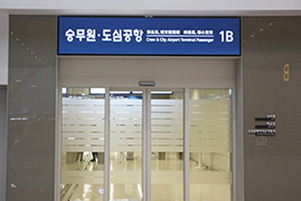

คู่มือขาออกสนามบินอินชอน
หากเดินทางด้วยเที่ยวบินระหว่างประเทศจากสนามบินอินชอน ควรไปถึง Terminal ที่ถูกต้องประมาณ 3 ชั่วโมงก่อนเครื่องออก เผื่อเวลาเพิ่มหากสายการบินกำหนดให้ไปถึงเร็วกว่านั้น มีสัมภาระพิเศษ หรือต้องดำเนินการขอคืนภาษี
หลังเช็กเอาต์จากโรงแรมแล้ว คุณอาจยังมีเวลาเที่ยวโซลอีกครึ่งวัน จะเหลือเวลาเท่าไรนั้นขึ้นอยู่กับเวลาเที่ยวบิน ที่พัก และวิธีเดินทางไปสนามบิน

วันสุดท้ายในเกาหลีควรวางแผนอย่างไร
แผนเที่ยววันสุดท้ายในเกาหลีจะแตกต่างกันมากระหว่างคนที่ต้องขึ้นเครื่องแต่เช้ากับคนที่บินช่วงเย็น
ถ้าเป็นเที่ยวบินเช้ามืด ควรจัดกระเป๋าตั้งแต่คืนก่อนและเตรียมการเดินทางไปสนามบินไว้ล่วงหน้า เพราะอาจมีเวลาไม่มากระหว่างออกจากที่พักกับไปถึงเคาน์เตอร์เช็กอินของสายการบิน
ถ้าเครื่องออกช่วงบ่ายหรือเย็น อาจยังมีเวลากินมื้อเช้า ซื้อของ หรือเดินเล่นในโซลเป็นครั้งสุดท้าย สอบถามโรงแรมว่าฝากกระเป๋าหลังเช็กเอาต์ได้หรือไม่ แล้วเลือกเที่ยวในจุดที่กลับมารับกระเป๋าได้โดยไม่ต้องรีบเดินทางข้ามเมือง
หากเที่ยวบินของคุณเข้าเงื่อนไขการเช็กอินที่ City Airport Terminal สถานีโซล อาจฝากสัมภาระโหลดใต้เครื่องไว้ที่นั่นก่อนออกไปใช้เวลาที่เหลือในโซลได้
ขั้นตอนการเดินทางขาออก
- ตรวจสอบเที่ยวบิน Terminal ขาออก และเวลาปิดเช็กอินของสายการบิน
- เช็กเอาต์และเตรียมที่ฝากกระเป๋า หรือดำเนินการเช็กอินและผ่าน ตม. ขาออกที่ City Airport Terminal หากมีสิทธิ์ใช้บริการ
- เดินทางไปยัง Terminal ที่ถูกต้อง
- ดำเนินการเช็กอิน โหลดกระเป๋า และผ่านขั้นตอนศุลกากรที่ยังไม่เสร็จ
- ผ่านจุดตรวจความปลอดภัยของสนามบิน และผ่าน ตม. ขาออกหากยังไม่ได้ดำเนินการที่ City Airport Terminal
- ตรวจสอบประตูขึ้นเครื่องและเตรียมพร้อมก่อนปิดรับผู้โดยสารขึ้นเครื่อง
หากจะขอคืนภาษีที่สนามบิน ควรเก็บสินค้าที่เกี่ยวข้องและเอกสารไว้ในจุดที่หยิบได้ง่าย แจ้งเจ้าหน้าที่สายการบินว่ามีสินค้าที่ขอคืนภาษีได้อยู่ในกระเป๋าที่จะโหลด ก่อนส่งกระเป๋าเข้าระบบครั้งสุดท้าย
จัดแผนเที่ยวช่วงสุดท้ายโดยยึดเวลาที่ต้องออกไปสนามบินเป็นหลัก เที่ยวบินช่วงดึกอาจทำให้มีเวลาเที่ยวโซลเพิ่มอีกหลายชั่วโมง แต่เวลาที่เพิ่มมาจะใช้ประโยชน์ได้จริงก็ต่อเมื่อยังมีวิธีเดินทางไปถึง Terminal ได้อย่างแน่นอน
Terminal 1 หรือ Terminal 2?
สนามบินอินชอนมีอาคารผู้โดยสารแยกกัน 2 แห่ง ทั้งสองแห่งมีพื้นที่ขาออกระหว่างประเทศอยู่ชั้น 3 แต่ระยะทางระหว่างอาคารไกลเกินกว่าจะเดินพร้อมกระเป๋าเดินทาง
เช็ก Terminal ขาออกก่อนเลือกรถบัส รถไฟ หรือรถรับส่งส่วนตัวไปสนามบิน
ตรวจสอบเที่ยวบิน ไม่ใช่ดูแค่ชื่อสายการบิน
เริ่มจาก e-ticket แล้วตรวจดูว่าสายการบินใดเป็นผู้ให้บริการเที่ยวบินจริง เรื่องนี้สำคัญเป็นพิเศษหากจองเที่ยวบิน codeshare ผ่านสายการบินอื่น
ใช้หน้าค้นหาเที่ยวบินขาออกอย่างเป็นทางการของสนามบินอินชอนเพื่อตรวจสอบข้อมูลต่อไปนี้
- หมายเลขเที่ยวบินและเวลาออกเดินทาง
- Terminal ขาออก
- เคาน์เตอร์เช็กอิน
- ประตูขึ้นเครื่อง (เมื่อมีการกำหนดแล้ว)
- สถานะเที่ยวบินล่าสุด
อย่าคิดว่าจะเดินทางออกจากเกาหลีที่ Terminal เดียวกับตอนเดินทางมาถึง เช็กเที่ยวบินขาออกอีกครั้งก่อนออกจากโรงแรม
ถ้าไปถึงผิด Terminal ต้องทำอย่างไร?
หากลงรถผิด Terminal ยังสามารถเดินทางระหว่าง Terminal 1 และ Terminal 2 ด้วยรถบัสรับส่งฟรีของสนามบินหรือรถไฟ Airport Railroad แบบเสียค่าโดยสารได้
จาก Terminal 1 ไป Terminal 2
ขึ้นรถบัสรับส่งฟรีที่ด้านนอกประตู 8 ชั้น 3 ของ Terminal 1
จาก Terminal 2 ไป Terminal 1
ขึ้นรถบัสรับส่งฟรีที่ด้านนอกประตู 7 ชั้น 3 ของ Terminal 2
รถไฟ Airport Railroad ก็เชื่อมทั้งสอง Terminal เช่นกัน ควรเผื่อเวลาเดินไปสถานี รอรถไฟ และเดินพร้อมกระเป๋ากลับขึ้นไปยังชั้นผู้โดยสารขาออก
ตรวจสอบเวลาให้บริการล่าสุดก่อนใช้วิธีใดวิธีหนึ่งสำหรับเที่ยวบินเช้ามืดหรือดึก
ถ้าใกล้ถึงเวลาปิดเช็กอินของสายการบินแล้ว ให้ติดต่อสายการบินระหว่างจัดหาวิธีเดินทางไปอีก Terminal การไปถึงอาคารที่ถูกต้องก่อนเครื่องออกไม่ได้หมายความว่าจะยังเช็กอินทันเสมอไป
ควรไปถึงสนามบินอินชอนก่อนเครื่องออกกี่ชั่วโมง?
สนามบินอินชอนแนะนำให้ไปถึงประมาณ 3 ชั่วโมงก่อนเที่ยวบินระหว่างประเทศออก ให้ใช้เวลานี้เป็นเป้าหมายในการไปถึงโถงขาออกของ Terminal ที่ถูกต้อง ไม่ใช่เวลาที่รถไฟมาถึงสถานีสนามบิน
เวลาปิดเช็กอินของสายการบินเป็นอีกเรื่องหนึ่ง การไปถึงก่อนเคาน์เตอร์ปิดเพียงเล็กน้อยแทบไม่เหลือเวลาให้จัดการปัญหากระเป๋า ตรวจเอกสาร หรือรับมือกับความล่าช้าที่ไม่คาดคิด
คำนวณย้อนจากเวลาเครื่องออก
เริ่มจากเวลาออกเดินทางตามตั๋วเครื่องบิน แล้วคำนวณย้อนกลับตามขั้นตอนการเดินทาง
- หักเวลาที่ต้องเผื่อไว้ในสนามบินจากเวลาเครื่องออก โดยเริ่มที่ 3 ชั่วโมง เพื่อกำหนดเวลาที่ควรถึงสนามบิน
- ประเมินเวลาเดินทางทั้งหมดจากโรงแรมถึงโถงขาออก รวมเวลาเดิน รอรถ ต่อรถ และเดินช่วงสุดท้ายภายใน Terminal
- เผื่อเวลาเพิ่มตามสมควรสำหรับความล่าช้าระหว่างเดินทาง
- กำหนดเวลาที่ต้องออกจากโรงแรมก่อนวางแผนเที่ยวหรือซื้อของช่วงสุดท้าย
ใช้เครื่องคำนวณด้านล่างเพื่อหาเวลาที่ควรออกจากโรงแรมตามแผนของคุณเอง แทนการยึดตารางเวลาแบบตายตัว
หากจะเช็กอินที่ City Airport Terminal สถานีโซล ต้องวางแผนตามเวลาปิดเช็กอินของที่นั่นซึ่งเร็วกว่าที่สนามบิน และยังต้องเผื่อเวลานั่งรถไฟ Express Train รวมถึงขั้นตอนที่เหลือในสนามบินด้วย
เมื่อไรที่ควรเผื่อเวลาเพิ่ม
เวลา 3 ชั่วโมงเป็นเพียงจุดเริ่มต้นในการวางแผน ไม่ได้หมายความว่าทุกเที่ยวบินจะใช้เวลาดำเนินการเท่ากัน
ควรพิจารณาเผื่อเวลาเพิ่มในกรณีต่อไปนี้
- เดินทางกับเด็กเล็กหรือผู้ที่ต้องการความช่วยเหลือ
- มีกระเป๋าขนาดใหญ่เกินมาตรฐาน อุปกรณ์กีฬา หรือกระเป๋าเดินทางหลายใบ
- สายการบินต้องตรวจวีซ่าหรือเอกสารเดินทางอื่นที่เคาน์เตอร์
- ต้องนำสินค้าที่ขอคืนภาษีไปให้ศุลกากรตรวจ
- คาดว่าสนามบินจะแออัดหรือการจราจรบนถนนจะหนาแน่นเป็นพิเศษ
บัตรขึ้นเครื่องบนมือถือช่วยลดบางขั้นตอนได้ แต่ไม่ได้หมายความว่าจะข้ามการโหลดกระเป๋าหรือการตรวจเอกสารได้เสมอไป คุณยังต้องผ่านจุดตรวจความปลอดภัย ผ่าน ตม. ขาออก และเดินไปถึงประตูขึ้นเครื่อง
ตรวจพยากรณ์ความหนาแน่นของผู้โดยสารก่อนวันเดินทาง และดูข้อมูลโถงขาออกแบบเรียลไทม์ในวันจริง ข้อมูลเหล่านี้ช่วยประเมินช่วงที่คนเยอะได้ แต่ไม่ได้รับประกันว่าคุณจะผ่านขั้นตอนต่าง ๆ ในสนามบินได้เร็วแค่ไหน
หากสายการบินแนะนำให้ไปถึงสนามบินเร็วกว่านี้ ให้ปฏิบัติตามคำแนะนำของสายการบิน
ดูพยากรณ์ความหนาแน่นของผู้โดยสารในสนามบิน
ดูเวลารอในโถงขาออกแบบเรียลไทม์
เครื่องคำนวณเวลาออกเดินทางไปสนามบิน
ควรออกไปสนามบินอินชอนกี่โมง?
กรอกข้อมูลเที่ยวบินและระยะเวลาเดินทางโดยประมาณเพื่อวางแผนเวลาออกจากที่พัก กรอกวันและเวลาเที่ยวบินตามเวลามาตรฐานเกาหลี (KST)
หากเป็นเที่ยวบินเช้ามืด ให้ตรวจสอบว่าขนส่งสาธารณะเริ่มให้บริการเร็วพอที่จะไปถึงสนามบินตามเวลาที่กำหนดหรือไม่ ถ้าไม่ทัน ให้จัดหาแท็กซี่หรือรถรับส่งส่วนตัว หรือพิจารณาพักคืนสุดท้ายใกล้สนามบินมากขึ้น
สำหรับเที่ยวบินหลังเที่ยงคืนไม่นาน อย่าลืมว่าอาจต้องเริ่มเดินทางไปสนามบินตั้งแต่วันก่อนหน้า
เช็กเอาต์จากโรงแรมและฝากกระเป๋า
หลังเช็กเอาต์จากที่พักแล้ว คุณอาจยังมีเวลาอีกหลายชั่วโมงก่อนออกจากโซลไปสนามบินอินชอน จุดที่ฝากกระเป๋ามีผลโดยตรงต่อเวลาที่เหลือสำหรับเที่ยวจริง ๆ
เลือกที่ฝากกระเป๋าให้เข้ากับแผนเที่ยวช่วงสุดท้ายและเส้นทางไปสนามบิน การประหยัดค่าฝากกระเป๋าเพียงเล็กน้อยมักไม่คุ้มกับการต้องย้อนเดินทางข้ามโซลมารับกระเป๋า
ฝากกระเป๋าไว้ที่โรงแรม
หากโรงแรมรับฝากกระเป๋าหลังเช็กเอาต์ และคุณตั้งใจใช้เวลาที่เหลืออยู่แถวที่พัก การฝากไว้ที่แผนกต้อนรับมักเป็นวิธีที่จัดการง่ายที่สุด
สอบถามโรงแรมล่วงหน้า
- ฝากกระเป๋าหลังเช็กเอาต์ได้หรือไม่?
- มีค่าฝากกระเป๋าหรือไม่?
- รับกระเป๋าคืนได้ช้าที่สุดกี่โมง?
- เมื่อกลับมารับกระเป๋า จะมีพนักงานอยู่ที่แผนกต้อนรับหรือไม่?
อย่าคิดว่าอพาร์ตเมนต์ เกสต์เฮาส์ หรือที่พักแบบเช็กอินด้วยตนเองจะมีบริการเหมือนโรงแรมที่มีพนักงานประจำ
หากแผนเที่ยวช่วงสุดท้ายอยู่คนละย่านของโซล ลองพิจารณาว่าการกลับโรงแรมพร้อมถุงช้อปปิ้งก่อนออกไปสนามบินจะเพิ่มระยะทางโดยไม่จำเป็นหรือไม่
เก็บพาสปอร์ต ยา โทรศัพท์ พาวเวอร์แบงก์ และสิ่งที่อาจต้องใช้ก่อนขึ้นเครื่องไว้กับตัว
บริการฝากและส่งกระเป๋า
ในโซลมีทางเลือกหลายแบบหากที่พักรับฝากกระเป๋าไม่ได้ หรือคุณอยากรับกระเป๋าในจุดที่ใกล้กับเส้นทางไปสนามบินมากกว่า
ล็อกเกอร์ฝากกระเป๋าที่สถานีรถไฟใต้ดิน — T-Locker
สถานีรถไฟใต้ดินหลายแห่งในโซลมีล็อกเกอร์ฝากกระเป๋า ขนาดที่ประกาศไว้มีตั้งแต่ 50 × 30 × 60 ซม. ถึง 50 × 90 × 60 ซม.
อัตราปกติสำหรับการฝาก 4 ชั่วโมงในวันธรรมดาอยู่ที่ ₩2,200–₩4,400 วันหยุดสุดสัปดาห์มีอัตราสูงกว่า และหากฝากนานขึ้นจะมีค่าใช้จ่ายเพิ่ม
สามารถฝากและรับกระเป๋าคืนได้ตั้งแต่ 05:00 น. ถึงเที่ยงคืน สำหรับล็อกเกอร์ของ Seoul Metro สามารถสแกน QR Code เพื่อใช้บริการผ่านเว็บได้โดยไม่ต้องติดตั้งแอป T-Locker หรือสร้างบัญชี
เช็กว่าล็อกเกอร์ที่ว่างมีขนาดพอใส่กระเป๋ารวมล้อและหูหิ้วหรือไม่ วิธีชำระเงินและขั้นตอนใช้งานอาจแตกต่างกันตามจุดให้บริการ

บริการฝากกระเป๋าที่มีพนักงาน — T-Luggage
T-Luggage มีจุดรับฝากกระเป๋าที่มีพนักงานประจำตามสถานีหลัก เช่น สถานีโซล สถานีมหาวิทยาลัยฮงอิก (Hongik University) เมียงดง และจัมชิล
อัตราฝากกระเป๋า 4 ชั่วโมงที่ประกาศไว้อยู่ที่ ₩3,000–₩13,000 ขึ้นอยู่กับขนาดกระเป๋าและวันในสัปดาห์
เคาน์เตอร์ T-Luggage ที่สถานีโซล มหาวิทยาลัยฮงอิก เมียงดง และจัมชิล เปิด 09:00–22:00 น. หากต้องรับกระเป๋าก่อน 09:00 น. ควรหาวิธีฝากกระเป๋าแบบอื่น
สถานีโซลและสถานีมหาวิทยาลัยฮงอิกเป็นจุดที่ควรพิจารณาเป็นพิเศษหากจะนั่ง AREX ไปสนามบิน
ที่สถานีโซล เคาน์เตอร์ T-Luggage ใกล้ทางออก 1 อยู่ฝั่งสถานีรถไฟใต้ดิน ควรเผื่อเวลารับกระเป๋าและเดินข้ามไปยังจุดขึ้น AREX

จุดรับฝากกระเป๋าของเอกชน
จุดรับฝากกระเป๋าของเอกชนเป็นอีกทางเลือกเมื่อล็อกเกอร์ในสถานีเต็มหรือต้องการเวลาให้บริการที่นานกว่า
LuggageDot ใกล้สถานีโซลเปิดให้เข้าใช้ได้ตลอด 24 ชั่วโมง มีล็อกเกอร์สำหรับกระเป๋าขนาดสูงสุด 32 นิ้ว อยู่ห่างทางออก 12 ประมาณ 287 เมตร ราคาเริ่มต้น ₩1,000 ต่อชั่วโมง ตู้บริการรองรับภาษาอังกฤษและรับชำระด้วยบัตร
ตรวจสอบว่ามีที่ว่างหรือไม่ ชำระเงินได้ด้วยวิธีใด และต้องกลับมารับกระเป๋าที่จุดไหน ก่อนกำหนดแผนเที่ยวช่วงสุดท้าย
ส่งกระเป๋าไปสนามบินอินชอน
T-Luggage มีบริการส่งกระเป๋าไปสนามบินภายในวันเดียวกันจากจุดที่ร่วมบริการ จึงอาจช่วยให้เที่ยวโซลได้คล่องตัวขึ้นโดยไม่ต้องย้อนกลับมาที่ฝากกระเป๋า
อย่างไรก็ตาม บริการนี้มีกำหนดเวลาส่งกระเป๋าช่วงเช้าและช่วงเวลารับกระเป๋าที่สนามบินในช่วงบ่าย จึงไม่เหมาะกับเที่ยวบินที่ต้องรับกระเป๋าก่อนเวลาส่งถึงสนามบินที่ยืนยันไว้
ก่อนจอง ให้ยืนยัน Terminal ขาออก เวลาส่งกระเป๋าช้าที่สุด เวลารับกระเป๋าเร็วที่สุดที่ได้รับการยืนยัน และเคาน์เตอร์รับกระเป๋าที่สนามบิน
บริการส่งกระเป๋าไปสนามบินไม่ได้ทำหน้าที่เช็กอินสัมภาระแทนสายการบิน คุณต้องรับกระเป๋าและดำเนินขั้นตอนตามที่สายการบินกำหนดด้วยตนเอง
หากในกระเป๋ามีสินค้าที่อาจต้องผ่านการตรวจของศุลกากรเพื่อขอคืนภาษี ต้องมั่นใจว่าสามารถนำสินค้าออกมาแสดงได้ก่อนโหลดกระเป๋า
ตรวจสอบบริการฝากและส่งกระเป๋า T-Luggage
ใช้เวลาที่เหลือให้คุ้มโดยไม่ต้องย้อนทาง
วางแผนเที่ยวช่วงสุดท้ายให้ไปในทิศทางเดียวกับเส้นทางไปสนามบิน แทนการเดินทางกลับไปกลับมาข้ามโซล
หากพักในฮงแดและจะนั่ง AREX All-Stop Train การใช้เวลาที่เหลือในฮงแดหรือย่านยอนนัมช่วยให้กลับมารับกระเป๋าใกล้สถานีได้
ถ้าจะนั่ง AREX Express Train จากสถานีโซล การฝากกระเป๋าใกล้สถานีอาจช่วยให้เที่ยวช่วงสุดท้ายในย่านอื่นได้โดยไม่ต้องกลับไปยังที่พักเดิม
ผู้ที่มีสิทธิ์ใช้ City Airport Terminal สถานีโซลมีอีกทางเลือก คือเช็กอินกับสายการบินและส่งสัมภาระโหลดใต้เครื่องก่อนออกไปใช้เวลาที่เหลือในโซล
หากเป็นเที่ยวบินเช้าหรือมีเวลาน้อยระหว่างเช็กเอาต์กับออกไปสนามบิน ไม่จำเป็นต้องเสียเวลาหาที่ฝากกระเป๋าเพิ่ม ให้เดินทางไปสนามบินโดยตรง
ใช้เครื่องคำนวณเวลาออกเดินทางไปสนามบินด้านบนเพื่อกำหนดเวลาที่ต้องเริ่มเดินทาง แล้วคำนวณย้อนอีกครั้งเพื่อเผื่อเวลารับกระเป๋าให้ทันก่อนเวลานั้น
City Airport Terminal ที่สถานีโซล
หากเที่ยวบินออกช่วงบ่ายหรือเย็น คุณอาจส่งกระเป๋าที่สถานีโซลตั้งแต่เช้า เที่ยวต่อในเมืองโดยไม่ต้องลากสัมภาระที่จะโหลดใต้เครื่อง แล้วค่อยนั่ง AREX Express Train ไปสนามบินอินชอน
City Airport Terminal สถานีโซลตั้งอยู่ชั้น B2 ในส่วนของ Airport Railroad ให้บริการเช็กอินกับสายการบิน โหลดกระเป๋า และผ่าน ตม. ขาออกสำหรับผู้เดินทางที่เข้าเงื่อนไข

ใครใช้ City Airport Terminal ได้บ้าง?
ก่อนจัดแผนเที่ยววันสุดท้ายโดยอาศัยบริการนี้ ตรวจสอบว่าคุณเข้าเงื่อนไขทั้ง 3 ข้อ
- เดินทางด้วยเที่ยวบินระหว่างประเทศจากสนามบินอินชอนในวันเดียวกัน
- สายการบินที่ให้บริการเที่ยวบินจริงและเที่ยวบินของคุณเข้าเงื่อนไขเช็กอินที่ City Airport Terminal
- มีตั๋ว AREX Express Train จากสถานีโซลไปสนามบินอินชอน
ตั๋ว All-Stop Train หรือบัตร T-money เพียงอย่างเดียวไม่สามารถใช้สิทธิ์บริการนี้ได้
| สายการบินที่ให้บริการเที่ยวบินจริง | Terminal ที่สนามบิน | เงื่อนไขเที่ยวบิน |
|---|---|---|
| Jeju Air (7C) | T1 | ไม่รวมเส้นทางไปทวีปอเมริกา กวม และไซปัน |
| Trinity Airways (เดิม T'way Air) (TW) | T1 | ไม่รวมเส้นทางไปทวีปอเมริกา กวม และไซปัน รองรับเที่ยวบิน codeshare ที่ Trinity Airways เป็นผู้ให้บริการจริง |
| Eastar Jet (ZE) | T1 | เส้นทางที่ Eastar Jet เป็นผู้ให้บริการจริง |
| Korean Air (KE) | T2 | รวมเที่ยวบิน codeshare ที่ Korean Air เป็นผู้ให้บริการจริง |
| Asiana Airlines (OZ) | T2 | รวมเที่ยวบิน codeshare ที่ Asiana เป็นผู้ให้บริการจริง |
| Jin Air (LJ) | T2 | ไม่รวมเส้นทางไปทวีปอเมริกา กวม และไซปัน รองรับเที่ยวบิน codeshare ที่ Jin Air เป็นผู้ให้บริการจริง |
| Air Busan (BX) | T2 | รวมเที่ยวบิน codeshare ที่ Air Busan เป็นผู้ให้บริการจริง |
| Air Seoul (RS) | T2 | ไม่รวมเส้นทางไปทวีปอเมริกา กวม และไซปัน รองรับเที่ยวบิน codeshare ที่ Air Seoul เป็นผู้ให้บริการจริง |
ชื่อสายการบินบนตั๋วอาจไม่ใช่สายการบินที่ให้บริการเที่ยวบินจริง ตรวจสอบผู้ให้บริการเที่ยวบินและยืนยันสิทธิ์ก่อนเดินทางไปสถานีโซล
City Airport Terminal ไม่รับกระเป๋าที่มีความยาวเกิน 150 ซม. และยังมีข้อจำกัดเรื่องขนาด น้ำหนัก และวิธีจัดการสัมภาระอื่น ๆ หากมีอุปกรณ์กีฬา เครื่องดนตรี หรือสัมภาระขนาดใหญ่ ควรตรวจสอบข้อจำกัดของสายการบินสำหรับการฝากที่ City Airport Terminal ก่อนเดินทางไปสถานีโซล
ผู้เดินทางพร้อมสัตว์เลี้ยงหรือผู้ที่ต้องการความช่วยเหลือเป็นพิเศษควรสอบถามสายการบินโดยตรง
ตรวจสอบสายการบินที่ใช้บริการได้และเงื่อนไขล่าสุด
เช็กอินและผ่าน ตม. ขาออก
-
ขั้นตอนที่ 1 — ซื้อตั๋ว AREX Express Train
ซื้อตั๋วออนไลน์หรือที่ตู้จำหน่ายตั๋วชั้น B2 สถานีโซล ใช้ QR Code บนตั๋วเพื่อเข้าสู่พื้นที่เช็กอินของ City Airport Terminal
เลือกเวลาออกของรถไฟให้เข้ากับแผนเที่ยวที่เหลือและมีเวลาเพียงพอที่สนามบินอินชอน
-
ขั้นตอนที่ 2 — เช็กอินและส่งกระเป๋า
ไปที่เคาน์เตอร์สายการบินพร้อมพาสปอร์ตและข้อมูลเที่ยวบิน เช็กอิน รับบัตรขึ้นเครื่อง และส่งสัมภาระที่ต้องโหลดใต้เครื่อง
รอจนเจ้าหน้าที่ยืนยันว่ากระเป๋าผ่านการตรวจสัมภาระแล้วจึงออกจากพื้นที่เช็กอิน
กระเป๋าที่โหลดจะถูกส่งต่อไปยังเที่ยวบินของคุณ ตามปกติไม่ต้องรับกระเป๋าอีกครั้งที่สนามบินอินชอน
ก่อนส่งกระเป๋าเข้าระบบ
หากจะขอคืนภาษีที่สนามบินอินชอน ศุลกากรอาจต้องตรวจสินค้าที่ซื้อมา
หากสินค้าเหล่านั้นนำขึ้นเครื่องได้ ให้เก็บไว้กับตัว แต่ถ้าต้องใส่ในสัมภาระโหลดใต้เครื่องและอาจต้องแสดงให้ศุลกากรตรวจ ควรพิจารณาโหลดกระเป๋าที่สนามบินอินชอนแทน
เก็บพาสปอร์ต บัตรขึ้นเครื่อง ยา ของมีค่า และพาวเวอร์แบงก์ไว้ในกระเป๋าถือขึ้นเครื่อง
-
ขั้นตอนที่ 3 — ผ่าน ตม. ขาออก
นำพาสปอร์ตและบัตรขึ้นเครื่องไปที่เคาน์เตอร์ตรวจคนเข้าเมืองบนชั้นเดียวกัน
การผ่าน ตม. ขาออกที่นี่พร้อมกับเช็กอินสายการบินให้เรียบร้อย ทำให้สามารถใช้ช่องทางขาออกที่กำหนดไว้สำหรับผู้ใช้ City Airport Terminal ที่สนามบินอินชอนได้
เวลาให้บริการและเวลาปิดเช็กอิน
| บริการ | เวลาให้บริการหรือกำหนดเวลา |
|---|---|
| เช็กอินกับสายการบินและโหลดกระเป๋า | 05:20–19:00 |
| เวลารับเช็กอินรอบสุดท้าย | 18:50 |
| ตม. ขาออก | 05:30–19:00 |
| เช็กอิน Terminal 1 ให้เสร็จ | 3 ชั่วโมงก่อนเครื่องออก |
| เช็กอิน Terminal 2 ให้เสร็จ | 3 ชั่วโมง 20 นาทีก่อนเครื่องออก |
กำหนดเวลาตามเที่ยวบินคือเวลาที่ต้องเช็กอินเสร็จแล้ว ไม่ใช่เวลาที่ควรเดินทางมาถึงสถานีโซล
คำนวณย้อนจากเวลาเครื่องออกของคุณ แล้วเผื่อเวลาเดินทางมายัง City Airport Terminal รอที่เคาน์เตอร์ และผ่านขั้นตอน ตม.
ต้องไปถึงก่อนเวลาปิดรับเช็กอินรอบสุดท้ายของ City Airport Terminal ด้วย
หากเครื่องออกหลังเที่ยงคืนไม่นาน อย่าคิดว่าสามารถเช็กอินที่สถานีโซลในวันก่อนหน้าได้ ให้ยืนยันสิทธิ์กับสายการบิน เพราะบริการนี้มีไว้สำหรับเที่ยวบินที่ออกในวันเดียวกัน
สำหรับเที่ยวบินเช้ามืดบางเที่ยว City Airport Terminal เปิดช้าเกินกว่าจะเช็กอินทันตามกำหนด ในกรณีนี้ให้เดินทางไปสนามบินอินชอนโดยตรง
จากสถานีโซลไปสนามบินอินชอน
AREX Express Train ออกจากชานชาลาชั้น B7 เดินตามป้าย Express Train และเผื่อเวลาเดินจากชั้น B2 ไปชานชาลา
| จุดหมายปลายทาง | เวลาเดินทางด้วย Express Train |
|---|---|
| สนามบินอินชอน Terminal 1 | 43 นาที |
| สนามบินอินชอน Terminal 2 | 51 นาที |
ตัวเลขนี้เป็นเวลาเดินทางบนรถไฟเท่านั้น ควรรวมเวลารอที่สถานีโซลและเวลาเดินจากสถานีรถไฟสนามบินไปยังโถงขาออกไว้ในแผนด้วย
เมื่อถึงสนามบินอินชอน ให้ไปที่โถงขาออกชั้น 3 แล้วเดินตามป้ายช่องทางขาออกที่กำหนดไว้สำหรับผู้ใช้ City Airport Terminal


เตรียมพาสปอร์ตและบัตรขึ้นเครื่องให้พร้อม
ยังต้องผ่านการตรวจความปลอดภัยของสนามบินและไปถึงประตูขึ้นเครื่องก่อนปิดรับผู้โดยสาร การเช็กอินที่ City Airport Terminal ไม่ได้ยกเว้นการตรวจความปลอดภัย
ควรใช้ City Airport Terminal หรือไม่?
หากแผนวันสุดท้ายผ่านสถานีโซล เที่ยวบินเข้าเงื่อนไข และตั้งใจนั่ง Express Train การเช็กอินล่วงหน้าอาจช่วยให้มีเวลาเที่ยวโซลอีกหลายชั่วโมงโดยไม่ต้องลากกระเป๋า
แต่หากพักใกล้สถานี AREX แห่งอื่น จะนั่งรถบัสสนามบิน หรือมีสัมภาระที่ต้องจัดการเป็นพิเศษ การเดินทางผ่านสถานีโซลอาจทำให้เสียเวลาเพิ่มโดยไม่จำเป็น
หากพักในฮงแดและกำลังจะนั่ง AREX All-Stop Train ไปสนามบินอินชอนโดยตรง การแวะไปสถานีโซลเพียงเพื่อเช็กอินอาจเสียเวลามากกว่าที่ประหยัดได้
วิธีเดินทางจากโซลไปสนามบินอินชอน
ย่านที่พักในโซลสำคัญกว่าการเลือกรถไฟขบวนที่เร็วที่สุด หากพักใกล้สถานี AREX รถไฟอาจเป็นวิธีไปสนามบินอินชอนที่จัดการง่ายกว่า แต่ถ้าพักใกล้ป้ายรถบัสสนามบินในเมียงดงหรือกังนัม การนั่งรถบัสอาจช่วยให้ไม่ต้องลากกระเป๋าผ่านสถานีรถไฟใต้ดินหลายแห่ง
ก่อนเลือกวิธีเดินทาง ให้พิจารณาจำนวนกระเป๋า ระยะที่ต้องเดิน และเวลาที่ต้องไปถึง Terminal ขาออก
AREX Express Train และ All-Stop Train
AREX Express Train วิ่งตรงจากสถานีโซลไปสนามบินอินชอน มีที่นั่งแบบระบุเลขที่นั่งและต้องซื้อตั๋วแยก ซึ่งซื้อได้ทางออนไลน์หรือที่สถานี
All-Stop Train จอดที่สถานีคงด็อก (Gongdeok) มหาวิทยาลัยฮงอิก Digital Media City และสถานีอื่น ๆ ตามเส้นทาง Airport Railroad สามารถใช้บัตร T-money หรือซื้อตั๋วเที่ยวเดียวได้
| Express Train | All-Stop Train | |
|---|---|---|
| Terminal 1 | 43 นาที | 59 นาที |
| Terminal 2 | 51 นาที | 66 นาที |
| ค่าโดยสารผู้ใหญ่ไป T1 | ₩13,000 | ₩4,750 |
| ค่าโดยสารผู้ใหญ่ไป T2 | ₩13,000 | ₩5,350 |
| ที่นั่ง | ระบุเลขที่นั่ง | ไม่ระบุเลขที่นั่ง |
ค่าโดยสาร All-Stop Train ในตารางอ้างอิงจากการชำระด้วยบัตรโดยสาร รถไฟบางขบวนอาจใช้เวลานานกว่าเล็กน้อย
หากพักในฮงแดหรือคงด็อก ให้นั่ง All-Stop Train ไปสนามบินโดยตรง ค่าโดยสารผู้ใหญ่จากทั้งสองสถานีไป Terminal 1 คือ ₩4,650 และ Terminal 2 คือ ₩5,250 การย้อนกลับไปสถานีโซลเพียงเพื่อต่อ Express Train มักเพิ่มเวลาและความลำบากโดยไม่จำเป็น
ดูปลายทางที่แสดงบนรถไฟก่อนขึ้น เพราะ All-Stop Train บางขบวนสิ้นสุดที่สถานี Geomam ไม่ได้ไปต่อถึงสนามบินอินชอน
ที่สถานีโซล ควรเผื่อเวลาเดินไปส่วนของ AREX โดยเฉพาะหากเดินทางมาด้วยรถไฟใต้ดินหรือ KTX จุดจำหน่ายตั๋ว Express Train อยู่ชั้น B2 และชานชาลาอยู่ชั้น B7
หากเช็กอินที่ City Airport Terminal สถานีโซลเรียบร้อยแล้ว ต้องเดินทางด้วย Express Train
ตรวจสอบตารางเวลา AREX Express Train
ตรวจสอบค่าโดยสาร All-Stop Train
รถบัสสนามบิน (Airport Limousine)
รถบัสสนามบิน Airport Limousineช่วยลดระยะเดินได้มากหากมีป้ายรถที่ใช้ได้ใกล้ที่พัก กระเป๋าเดินทางใบใหญ่จะเก็บในช่องสัมภาระของรถ จึงไม่ต้องลากผ่านสถานีรถไฟใต้ดินหรือต่อรถหลายครั้ง
เส้นทางรถบัสสนามบินที่นิยมใช้ ได้แก่
- 6001 และ 6015: เมียงดงและพื้นที่ใกล้เคียงในใจกลางโซล — ผู้ใหญ่ ₩17,000 ต่อคน
- 6002: ฮงแดและป้ายอื่น ๆ ในใจกลางโซล — ผู้ใหญ่ ₩17,000 ต่อคน
- 6103: รถตรงจาก COEX City Airport ไปสนามบินอินชอน — ผู้ใหญ่ ₩18,000 ต่อคน
ตรวจสอบตำแหน่งป้ายรถขาไปสนามบินให้แน่ชัด เพราะอาจอยู่ฝั่งตรงข้ามถนนกับป้ายที่ลงรถตอนมาถึงโซล
สำหรับรถ Airport Limousine เช่น สาย 6002 และ 6015 ผู้โดยสารขึ้นรถตามลำดับที่มาถึงและจ่ายด้วยบัตรโดยสารหรือเงินสด หากรถเต็มอาจต้องรอคันถัดไป
รถสายอื่นอาจมีวิธีใช้บริการต่างกัน เช่น สาย 6103 จาก COEX รับจองล่วงหน้า
แจ้งคนขับว่าจะออกเดินทางจาก Terminal 1 หรือ Terminal 2 ก่อนนำกระเป๋าไปเก็บในช่องสัมภาระ
การจราจรบนถนนอาจทำให้ใช้เวลาเดินทางนานกว่าที่คาดมาก หากต้องเดินทางช่วงรถติด ควรเผื่อเวลาเพิ่มหรือพิจารณานั่งรถไฟหากเดินทางไปสถานี AREX ได้ง่าย
เส้นทางและตารางเวลา Airport Limousine
แท็กซี่
แท็กซี่พาคุณจากที่พักไปถึงโถงขาออกได้โดยตรง โดยไม่ต้องต่อรถที่สถานีหรือเดินไปป้ายรถบัส
หากเดินทาง 2 หรือ 3 คนและหารค่าโดยสารกัน ค่าใช้จ่ายที่เพิ่มขึ้นอาจคุ้มเมื่อมีกระเป๋าหลายใบ หรือไม่เช่นนั้นต้องต่อรถไฟใต้ดินหลายครั้ง
แท็กซี่ทั่วไปในโซลคิดค่าโดยสารตามมิเตอร์ โดยค่าทางด่วนและค่าบริการเพิ่มเติมที่เกี่ยวข้องจะมีผลต่อยอดสุดท้าย
บริการ International Taxi ที่โซลกำหนดไว้ยังมีอัตราค่าโดยสารไปสนามบินแบบเหมาจ่ายด้วย อัตราที่ประกาศสำหรับรถมาตรฐานอยู่ที่ ₩70,000–₩95,000 ตามเขตที่เดินทาง
อย่าคิดว่าผู้โดยสาร 4 คนพร้อมกระเป๋าใหญ่ 4 ใบจะขึ้นแท็กซี่มาตรฐานได้ทั้งหมด เช็กพื้นที่เก็บสัมภาระหรือขอรถขนาดใหญ่ขึ้นล่วงหน้า
ขอให้โรงแรมเรียกแท็กซี่หรือใช้บริการจองแท็กซี่ และตรวจสอบให้แน่ใจว่าคนขับทราบ Terminal ขาออกที่ถูกต้อง
ตรวจสอบราคาและการจอง International Taxi
รถรับส่งส่วนตัวที่จองล่วงหน้า
ควรพิจารณาจองรถรับส่งส่วนตัวหากเดินทางกับเด็ก มีกระเป๋าเดินทางขนาดใหญ่หลายใบ หรือมากันเป็นกลุ่มที่ต้องใช้รถขนาดใหญ่กว่า
วิธีนี้ยังช่วยได้หากจำเป็นต้องออกจากที่พักก่อนระบบขนส่งสาธารณะตามปกติเริ่มให้บริการ
ก่อนจอง ตรวจสอบรายละเอียดต่อไปนี้
- ที่อยู่โรงแรมสำหรับรับผู้โดยสารและเวลานัดรับ
- Terminal ขาออกที่สนามบินอินชอน
- จำนวนและขนาดกระเป๋าที่รถสามารถบรรทุกได้จริง
- มีที่นั่งนิรภัยสำหรับเด็กหรือไม่ หากจำเป็นต้องใช้
- ราคานี้รวมค่าทางด่วน ค่าจอดรถ และค่าบริการช่วงเช้ามืดหรือดึกแล้วหรือไม่
- เงื่อนไขการยกเลิกและระยะเวลาที่คนขับรอได้
ตอนจองต้องเลือกทิศทางจากโซลไปสนามบินอินชอนให้ถูกต้อง เพราะบริการรับผู้โดยสารขาเข้าจากสนามบินอาจไม่ครอบคลุมการรับจากโรงแรม
รถรับส่งส่วนตัวช่วยให้ไม่ต้องหารถในวันเดินทางกลับ แต่ยังได้รับผลกระทบจากการจราจร ใช้เครื่องคำนวณเวลาออกเดินทางไปสนามบินด้านบนเพื่อวางแผนเวลานัดรับ รวมทั้งเผื่อเวลาสำหรับความล่าช้าตามสมควร
เที่ยวบินเช้ามืดและเที่ยวบินดึก
การเดินทางไปสนามบินอินชอนนอกเวลาขนส่งสาธารณะตามปกติต้องวางแผนเพิ่มเล็กน้อย โซลมีรถบัสสนามบินกลางคืน แต่รถไฟและรถบัสสนามบินตามปกติไม่ได้ให้บริการตลอด 24 ชั่วโมง
ตรวจสอบเวลาที่ต้องถึงสนามบินก่อนตัดสินใจว่าจะพักคืนสุดท้ายในโซลหรือใกล้สนามบินมากกว่าเดิม
เที่ยวบินเช้ามืด
หากเครื่องออกเวลา 08:00 น. การไปถึงสนามบินก่อนเครื่องออก 3 ชั่วโมงหมายถึงต้องถึงสนามบินเวลา 05:00 น. หากรอ AREX ขบวนแรกจากสถานีโซลก็จะช้ากว่าแผนที่กำหนดแล้ว
All-Stop Train ขบวนแรกออกจากสถานีโซลเวลา 05:20 น. ส่วน Express Train ขบวนแรกออกเวลา 06:00 น. ถึง Terminal 1 เวลา 06:43 น. และ Terminal 2 เวลา 06:51 น.
รถบัสสนามบินเที่ยวเช้าตามปกติอาจยังใช้ได้ ขึ้นอยู่กับเวลาเที่ยวบินและย่านที่พัก ตรวจสอบเวลาออกจากป้ายที่จะขึ้นจริง ไม่ใช่ดูเพียงเวลาออกจากต้นทางของสายรถ
| สายรถ | พื้นที่หลักที่ผ่าน | ค่าโดยสารผู้ใหญ่ |
|---|---|---|
| N6000 | สถานีขนส่ง Gangnam Express Bus Terminal, Heukseok, Yeomchang, Songjeong | ₩17,000 |
| N6002 | Cheongnyangni, ทงแดมุน, ควังฮวามุน, ฮงแด | ₩17,000 |
| N6701 | Dongdaemun Design Plaza, เมียงดง, สถานีโซล, มาโพ | ₩18,000 |
| N6703 | Gwangnaru, Gangbyeon, จัมชิล, Samseong, Banpo | ₩18,000 |
ค่าโดยสารผู้ใหญ่จากสถานี Songjeong ไปสนามบินอินชอนด้วยรถสาย N6000 คือ ₩10,000
รถทั้ง 4 สายจอดที่สนามบินทั้งสอง Terminal
เมื่อขึ้นรถในโซล สาย N6000 และ N6002 รับเงินสดหรือ T-money สำหรับ N6701 และ N6703 ให้ตรวจสอบวิธีซื้อตั๋วและชำระเงินล่าสุดกับผู้ให้บริการ
รถบัสกลางคืนมีรอบน้อยกว่าช่วงกลางวัน ตรวจสอบตารางเวลาของป้ายที่จะขึ้นและเผื่อเวลาไว้หากไม่สามารถขึ้นรถรอบที่ตั้งใจได้
ตรวจสอบตารางรถบัสกลางคืน Terminal 1
ตรวจสอบตารางรถบัสกลางคืน Terminal 2
เมื่อไรที่ควรพิจารณาแท็กซี่หรือโรงแรมใกล้สนามบิน
หากไม่มีป้ายรถบัสกลางคืนที่ใช้ได้ใกล้ที่พัก ให้จัดหาแท็กซี่หรือรถรับส่งส่วนตัวไว้ตั้งแต่คืนก่อน
สำหรับครอบครัวที่มีเด็กเล็ก การย้ายไปพักโรงแรมแถวสนามบินในเย็นวันสุดท้ายอาจสบายกว่าการปลุกทุกคนกลางดึกเพื่อเดินทางจากโซล
ก่อนจองโรงแรมใกล้สนามบิน ยืนยันว่าจะเดินทางไป Terminal ขาออกอย่างไร รถรับส่งของโรงแรมอาจเริ่มให้บริการไม่ทันเที่ยวบิน และการพักใกล้สนามบินก็ไม่ได้หมายความว่าจะเดินไป Terminal ได้เสมอไป
เที่ยวบินดึกและเที่ยวบินหลังเที่ยงคืน
เที่ยวบินที่ออกหลังเที่ยงคืนไม่นานอาจทำให้ดูวันผิดได้ง่าย หากตั๋วระบุเวลา 00:30 น. ของวันอังคาร ตามปกติต้องเดินทางไปสนามบินในคืนวันจันทร์
หากเครื่องออกช่วงดึก คุณอาจยังใช้เวลาส่วนใหญ่ของวันสุดท้ายเที่ยวโซลและเดินทางด้วยรถไฟหรือรถบัสสนามบินตามปกติได้
AREX Express Train ขบวนสุดท้ายออกจากสถานีโซลเวลา 23:00 น. ส่วน All-Stop Train ขบวนสุดท้ายที่ไปถึงสนามบินอินชอนออกเวลา 23:40 น. ขบวนที่ออกช้ากว่านี้อาจสิ้นสุดที่ Geomam
เวลาเหล่านี้เป็นเวลาออกของรถ ไม่ใช่เวลาที่แนะนำให้ออกเดินทางสำหรับเที่ยวบินของคุณ ให้คำนวณย้อนจากเวลาเครื่องออกตามกำหนดและเวลาที่ต้องไปถึงสนามบิน
ตรวจสอบตารางเวลา AREX แต่ละสถานี
หากตั้งใจใช้เวลาหลายชั่วโมงที่สนามบินในช่วงกลางคืน ตรวจสอบว่าสายการบินเปิดเคาน์เตอร์เช็กอินกี่โมง คุณอาจต้องรอพร้อมกระเป๋าในพื้นที่สาธารณะก่อนเข้าสู่พื้นที่ขาออกด้านใน
ร้านอาหาร ร้านค้า และสิ่งอำนวยความสะดวกอื่น ๆ ในสนามบินมีเวลาให้บริการของตัวเอง อย่าคิดว่าทุกบริการจะเปิดตลอดทั้งคืน
ใช้เครื่องคำนวณเวลาออกเดินทางไปสนามบินเพื่อกำหนดวันและเวลาที่ต้องออกเดินทาง ก่อนวางแผนที่พักคืนสุดท้าย การรับกระเป๋า หรือการเดินทางไปสนามบิน
เช็กอินและโหลดกระเป๋า
เมื่อถึง Terminal ที่ถูกต้องที่สนามบินอินชอน ให้ไปยังโถงขาออกชั้น 3 แล้วดูจอแสดงข้อมูลเที่ยวบินเพื่อหาเคาน์เตอร์เช็กอินของสายการบิน
หากเช็กอินและผ่าน ตม. ขาออกที่ City Airport Terminal สถานีโซลเรียบร้อยแล้ว ให้เดินตามช่องทางขาออกที่กำหนดไว้แทน
เช็กอินออนไลน์หรือเช็กอินที่สนามบิน
การเช็กอินออนไลน์ก่อนออกจากที่พักอาจช่วยประหยัดเวลาที่สนามบิน คุณอาจเลือกที่นั่งและรับบัตรขึ้นเครื่องบนมือถือผ่านเว็บไซต์หรือแอปของสายการบินได้
ขั้นตอนถัดไปขึ้นอยู่กับสัมภาระและเอกสารเดินทางของคุณ
- หากมีบัตรขึ้นเครื่องที่ใช้ได้ มีเพียงกระเป๋าถือขึ้นเครื่อง และไม่มีเอกสารที่ต้องตรวจเพิ่มเติม โดยทั่วไปสามารถไปยังจุดตรวจความปลอดภัยหลังดำเนินขั้นตอนศุลกากรที่จำเป็นแล้ว
- หากมีสัมภาระโหลดใต้เครื่อง ให้ไปที่เคาน์เตอร์รับกระเป๋าของสายการบินหรือตู้โหลดกระเป๋าด้วยตนเองที่คุณมีสิทธิ์ใช้บริการ
- หากสายการบินต้องตรวจพาสปอร์ต วีซ่า หรือเอกสารเดินทางอื่น ให้ไปที่เคาน์เตอร์เช็กอินที่มีพนักงาน
ทั้งสอง Terminal มีตู้เช็กอินด้วยตนเอง แต่บางสายการบิน บางจุดหมายปลายทาง และผู้โดยสารบางประเภทไม่เข้าเงื่อนไขใช้บริการนี้
โหลดกระเป๋าและเวลาปิดรับของสายการบิน
ตรวจสอบสิทธิ์สัมภาระก่อนถึงสนามบิน น้ำหนัก ขนาด และจำนวนกระเป๋าที่อนุญาตขึ้นอยู่กับสายการบินและประเภทตั๋ว
ตั๋วชั้นประหยัดไม่ได้รวมสิทธิ์โหลดกระเป๋าเสมอไป โดยเฉพาะสายการบินต้นทุนต่ำ
สนามบินอินชอนยังมีบริการโหลดกระเป๋าด้วยตนเองสำหรับผู้โดยสารที่เข้าเงื่อนไข ข้อจำกัดทั่วไปที่สนามบินประกาศคือกระเป๋าต้องยาวน้อยกว่า 90 ซม. โดยมีเงื่อนไขเพิ่มเติมตามสายการบิน

หากมีกระเป๋าขนาดใหญ่เกินมาตรฐาน อุปกรณ์กีฬา หรือต้องจ่ายค่าน้ำหนักเกิน ให้ตรวจสอบว่าจำเป็นต้องไปที่เคาน์เตอร์ที่มีพนักงานหรือไม่
เวลาปิดเช็กอินและปิดรับกระเป๋าของสายการบินต่างจากเวลาเครื่องออกตามกำหนด ตรวจสอบเวลาเหล่านี้ก่อนออกจากที่พัก แม้จะมีบัตรขึ้นเครื่องบนมือถือแล้วก็ตาม
ตรวจสอบบริการเช็กอินและโหลดกระเป๋าด้วยตนเอง
ก่อนส่งกระเป๋าเข้าระบบ
ใช้เวลาสักครู่ตรวจของในกระเป๋าก่อนที่กระเป๋าจะถูกส่งเข้าไปในสายพานลำเลียงสัมภาระ
เก็บสิ่งต่อไปนี้ไว้กับตัว
- พาสปอร์ต บัตรขึ้นเครื่อง และเอกสารเดินทางที่จำเป็น
- ยาที่อาจต้องใช้ระหว่างเดินทาง
- เงิน ของมีค่า และของใช้ส่วนตัวที่จำเป็น
- พาวเวอร์แบงก์และแบตเตอรี่ลิเธียมสำรองที่อนุญาตให้นำขึ้นเครื่อง
- เอกสารขอคืนภาษีและสินค้าที่ต้องเตรียมไว้ให้ศุลกากรตรวจ
หากในกระเป๋าที่จะโหลดมีสินค้าที่ยังต้องดำเนินการขอคืนภาษี ให้แจ้งเจ้าหน้าที่สายการบินก่อนโหลดกระเป๋าเสร็จ
เจ้าหน้าที่สามารถแนะนำขั้นตอนศุลกากรและการจัดการกระเป๋าที่ถูกต้องได้
เก็บหลักฐานรับฝากสัมภาระไว้และทำตามคำแนะนำของสายการบินหากต้องตรวจสัมภาระเพิ่มเติม
เมื่อสายการบินรับกระเป๋าเข้าระบบแล้ว การขอนำกระเป๋ากลับออกมาอาจทำได้ยากและทำให้การเดินทางล่าช้า
ขอคืนภาษีก่อนเดินทางออกจากเกาหลี
หากซื้อเครื่องสำอาง เสื้อผ้า หรือสินค้าอื่น ๆ ระหว่างเที่ยวเกาหลี ตรวจสอบว่ายังมีรายการที่ต้องขอคืนภาษีก่อนกลับหรือไม่
สิ่งที่ต้องดูเมื่ออยู่สนามบินอินชอนคือยังต้องผ่านการตรวจของศุลกากร ต้องรับเงินคืน หรือยังต้องทำทั้งสองอย่าง
คืนภาษีทันทีหรือขอคืนที่สนามบิน
การซื้อสินค้าที่ได้รับสิทธิ์คืนภาษีไม่ได้หมายความว่าต้องแวะเคาน์เตอร์คืนภาษีที่สนามบินทุกครั้ง
คืนภาษีทันทีที่ร้านค้า
ที่ร้านค้าที่ร่วมบริการ นักเดินทางที่มีสิทธิ์สามารถแสดงพาสปอร์ตและได้รับการหักภาษีออกทันทีตอนชำระเงิน
เงื่อนไขการซื้อมีดังนี้
- ยอดซื้อต่อรายการอย่างน้อย ₩15,000
- ยอดซื้อต่อรายการต่ำกว่า ₩1,000,000
- ยอดซื้อรวมที่ได้รับการคืนภาษีทันทีตลอดทริปไม่เกิน ₩5,000,000
หากร้านหักภาษีออกจากยอดซื้อแล้ว ไม่ต้องขอคืนภาษีรายการเดิมซ้ำที่สนามบิน
การขอคืนภาษีแบบปกติ
ชำระราคาสินค้าเต็มจำนวนที่ร้านค้าที่ร่วมบริการและรับเอกสารขอคืนภาษี จากนั้นจึงขอคืนภาษีตามสิทธิ์ผ่านผู้ให้บริการที่ได้รับอนุญาต
สำหรับนักเดินทางต่างชาติส่วนใหญ่ เงื่อนไขรวมถึงการพักในเกาหลีไม่ถึง 6 เดือน และนำสินค้าออกนอกประเทศภายใน 3 เดือนนับจากวันที่ซื้อ สินค้าต้องอยู่ในสภาพใหม่ ยังไม่ผ่านการใช้งาน และยังไม่เปิดบรรจุภัณฑ์
หากได้รับเงินคืนภาษีล่วงหน้าที่จุดคืนภาษีในเมืองแล้ว ให้ตรวจสอบว่ายังต้องยืนยันการนำสินค้าออกนอกประเทศที่สนามบินหรือไม่
เก็บใบเสร็จและเอกสารขอคืนภาษีไว้จนกว่าจะดำเนินการเสร็จ
ตรวจสอบสิทธิ์และเงื่อนไขขอคืนภาษีในเกาหลี
ขอคืนภาษีสำหรับสินค้าในกระเป๋าโหลดใต้เครื่อง
หากในกระเป๋ามีสินค้าที่ขอคืนภาษีซึ่งไม่สามารถนำขึ้นเครื่องได้ เช่น ผลิตภัณฑ์บำรุงผิวขนาดปกติ ให้ดำเนินขั้นตอนศุลกากรที่จำเป็นก่อนส่งกระเป๋าเข้าระบบ
-
ขั้นตอนที่ 1 — แจ้งสายการบินตอนเช็กอิน
แจ้งว่าในกระเป๋าที่จะโหลดมีสินค้าที่ต้องดำเนินการขอคืนภาษี
สายการบินสามารถติดป้ายสัมภาระและคืนกระเป๋าให้คุณชั่วคราวเพื่อนำไปดำเนินขั้นตอนศุลกากรได้
-
ขั้นตอนที่ 2 — ใช้ตู้ขอคืนภาษี
ไปที่ตู้ขอคืนภาษีในโถงขาออกส่วนสาธารณะชั้น 3 ทำตามขั้นตอนบนหน้าจอเพื่อดำเนินการด้วยพาสปอร์ตและเอกสารขอคืนภาษี
ตู้จะแจ้งว่าสินค้าที่ซื้อจำเป็นต้องให้ศุลกากรตรวจหรือไม่

-
ขั้นตอนที่ 3 — ให้ศุลกากรตรวจหากมีการกำหนด
หากระบบแจ้งให้ไปที่เคาน์เตอร์ศุลกากร ให้แสดงพาสปอร์ต เอกสารขอคืนภาษี และสินค้าที่เกี่ยวข้อง
เก็บสินค้าเหล่านี้ไว้ในจุดที่หยิบออกมาได้ง่าย ไม่ใช่ใส่ไว้ใต้สัมภาระทั้งหมดในกระเป๋า
-
ขั้นตอนที่ 4 — ส่งกระเป๋าโหลดใต้เครื่อง
ทำตามคำแนะนำของเจ้าหน้าที่สนามบิน เมื่อผ่านการตรวจที่จำเป็นแล้ว สามารถส่งกระเป๋าที่สายพานสัมภาระที่กำหนดไว้ใกล้เคาน์เตอร์ศุลกากร
จากนั้นผ่านจุดตรวจความปลอดภัยและ ตม. ขาออก ก่อนรับเงินภาษีที่ยังไม่ได้รับในพื้นที่ขาออกด้านใน
ขอคืนภาษีสำหรับสินค้าที่ถือขึ้นเครื่อง
หากสินค้าที่ซื้อได้รับอนุญาตให้นำขึ้นเครื่อง สามารถเก็บไว้กับตัวระหว่างดำเนินขั้นตอนศุลกากร
เมื่อได้รับบัตรขึ้นเครื่องแล้ว ให้ไปที่ตู้ขอคืนภาษีในโถงขาออกส่วนสาธารณะ หากตู้แจ้งว่าต้องให้ศุลกากรตรวจ ให้นำสินค้าและเอกสารไปที่เคาน์เตอร์ศุลกากร
อย่าคิดว่าใบเสร็จขอคืนภาษีจะทำให้สามารถนำภาชนะบรรจุของเหลวที่มีขนาดเกินกำหนดผ่านจุดตรวจความปลอดภัยได้
ตัวอย่างเช่น ผลิตภัณฑ์บำรุงผิวเกาหลีขวด 200 มล. ที่ซื้อจากร้านคืนภาษีทั่วไปยังอยู่ภายใต้ข้อจำกัดของเหลวที่ถือขึ้นเครื่องในเที่ยวบินระหว่างประเทศ
หากจะนำสินค้าแบบนี้ใส่กระเป๋าโหลดใต้เครื่อง ให้ทำตามขั้นตอนขอคืนภาษีสำหรับสัมภาระโหลดใต้เครื่องก่อนส่งกระเป๋าเข้าระบบ
รับเงินภาษีคืน
การผ่านขั้นตอนยืนยันของศุลกากรหรือตู้ขอคืนภาษีไม่ได้หมายความว่าได้รับเงินคืนเรียบร้อยแล้วเสมอไป
ทำตามคำแนะนำของระบบคืนภาษีและตรวจสอบว่าต้องไปรับเงินสดหรือดำเนินการคืนเงินเข้าบัตรที่เคาน์เตอร์หรือตู้ในพื้นที่หลังผ่านการตรวจหรือไม่
| Terminal | ตำแหน่ง | เวลาเปิดเคาน์เตอร์ที่มีพนักงาน | ตู้อัตโนมัติ |
|---|---|---|---|
| Terminal 1 | ชั้น 3 ใกล้ Gate 28 | 07:00–22:00 | 24 ชั่วโมง |
| อาคาร Concourse | ชั้น 3 ใกล้ร้านขายยาบริเวณกลางอาคาร | — | 24 ชั่วโมง |
| Terminal 2 | ชั้น 3 ใกล้ Gate 249 และ 270 ตามสารบบสิ่งอำนวยความสะดวกของสนามบิน | 07:00–21:30 ตามสารบบของสนามบิน | ยืนยันกับผู้ให้บริการคืนภาษี |
คู่มือขอคืนภาษีอีกหน้าหนึ่งของสนามบินระบุ Gate 253 แทน ควรยืนยันจุดรับเงินคืนในพื้นที่หลังผ่านการตรวจและเวลาเปิดกับผู้ให้บริการคืนภาษีของคุณ
Terminal 2 ยังมีตู้ขอคืนภาษีที่เปิดตลอด 24 ชั่วโมงใกล้เคาน์เตอร์เช็กอิน F และ G ในโถงขาออกส่วนสาธารณะ ซึ่งแยกจากจุดรับเงินคืนหลังผ่านการตรวจความปลอดภัยและ ตม. ขาออก
สิ่งอำนวยความสะดวกสำหรับรับเงินคืนที่ระบุในตารางอยู่หลังจุดตรวจความปลอดภัยและ ตม. ขาออก
อาจเลือกรับเงินสดหรือคืนเงินเข้าบัตรได้ตามเงื่อนไขของผู้ให้บริการคืนภาษี ตรวจสอบทางเลือกที่ใช้ได้ก่อนทำรายการเสร็จ
การมีตู้อัตโนมัติที่เปิด 24 ชั่วโมงไม่ได้หมายความว่าจะมีเจ้าหน้าที่ศุลกากรตรวจสินค้าหรือเจ้าหน้าที่ช่วยดำเนินการคืนภาษีตลอดเวลา
หากเป็นเที่ยวบินเช้ามืดหรือดึก หรือมีสินค้าหลายรายการที่อาจต้องตรวจ ควรเผื่อเวลาเพิ่มสำหรับการขอคืนภาษี
อย่ารอจนเหลือเวลาเพียงไม่กี่นาทีก่อนขึ้นเครื่องแล้วค่อยขอคืนภาษี
การตรวจความปลอดภัย
หลังเช็กอิน โหลดกระเป๋า และดำเนินขั้นตอนศุลกากรที่จำเป็นแล้ว ให้ไปยังพื้นที่ตรวจความปลอดภัย
เตรียมพาสปอร์ตและบัตรขึ้นเครื่องให้พร้อม วางสิ่งของในถาดตรวจและทำตามคำแนะนำของเจ้าหน้าที่สนามบิน
โดยทั่วไปอุปกรณ์ตรวจความปลอดภัยที่สนามบินอินชอนในปัจจุบันอนุญาตให้เก็บแล็ปท็อปและแท็บเล็ตไว้ในกระเป๋าได้ แต่เจ้าหน้าที่ยังอาจขอให้นำของออกมาตรวจหรือดำเนินการตรวจเพิ่มเติม
ของเหลว เครื่องสำอาง และของใช้ส่วนตัว
เที่ยวบินระหว่างประเทศที่ออกจากสนามบินอินชอนมีข้อจำกัดการนำของเหลว สเปรย์ และเจลขึ้นเครื่อง
| รายการ | เงื่อนไขการถือขึ้นเครื่อง |
|---|---|
| ภาชนะบรรจุของเหลวแต่ละชิ้น | ไม่เกิน 100 มล. |
| ถุงใสที่ปิดซ้ำได้ | ความจุไม่เกิน 1 ลิตร |
| จำนวนถุง | คนละ 1 ถุง |
ข้อจำกัดนี้คิดจากความจุของภาชนะ ไม่ใช่ปริมาณของเหลวที่เหลืออยู่ข้างใน
ดังนั้นขวดขนาด 200 มล. ที่เหลือของเหลวเพียงครึ่งเดียวก็ยังมีขนาดเกินกำหนดสำหรับสัมภาระถือขึ้นเครื่องตามปกติ
ตัวอย่างสินค้าที่นักเดินทางมักซื้อในเกาหลีและอยู่ภายใต้ข้อจำกัดนี้ ได้แก่
- โทนเนอร์ โลชั่น และผลิตภัณฑ์บำรุงผิวชนิดเหลว
- ครีมกันแดด ครีม และลิปกลอส
- น้ำหอม แชมพู และยาสีฟัน
- กิมจิ โคชูจัง และอาหารอื่นที่มีของเหลวหรือเนื้อข้นเป็นส่วนประกอบ
ใส่ภาชนะที่มีขนาดใหญ่กว่าไว้ในกระเป๋าโหลดใต้เครื่องหากได้รับอนุญาต
ยาชนิดเหลวที่จำเป็นและอาหารเด็กอาจมีข้อยกเว้น ตรวจสอบเงื่อนไขที่ใช้ก่อนเดินทาง
ของเหลวที่ซื้อจากร้านดิวตี้ฟรีอาจนำขึ้นเครื่องได้หากบรรจุในถุงนิรภัยดิวตี้ฟรีแบบปิดผนึกที่ได้รับการรับรอง เก็บถุงให้ปิดผนึกไว้จนถึงการขึ้นเครื่องเที่ยวสุดท้าย และตรวจสอบกฎที่สนามบินซึ่งต้องต่อเครื่องด้วย
สินค้าจากร้านที่ให้บริการคืนภาษีทั่วไปไม่ได้รับข้อยกเว้นนี้โดยอัตโนมัติ
พาวเวอร์แบงก์และแบตเตอรี่ลิเธียม
ตรวจสอบพาวเวอร์แบงก์ก่อนจัดกระเป๋า ต้องนำไว้ในกระเป๋าถือขึ้นเครื่อง ไม่ใช่กระเป๋าโหลดใต้เครื่อง
ตามกฎปัจจุบัน ผู้โดยสารแต่ละคนสามารถนำพาวเวอร์แบงก์ที่เข้าเงื่อนไขได้ไม่เกิน 2 ชิ้น
| ความจุแบตเตอรี่ | เงื่อนไขการนำพาวเวอร์แบงก์ขึ้นเครื่อง |
|---|---|
| ไม่เกิน 100 Wh | อนุญาต ภายใต้ข้อจำกัดไม่เกิน 2 ชิ้น |
| เกิน 100 Wh แต่ไม่เกิน 160 Wh | ไม่ควรจัดใส่กระเป๋าสำหรับเดินทางระหว่างประเทศ สายการบินอาจห้ามนำพาวเวอร์แบงก์ขนาดความจุนี้ขึ้นเครื่อง |
| เกิน 160 Wh | ไม่อนุญาต |
ปัจจุบันกฎของเกาหลีอนุญาตพาวเวอร์แบงก์บางประเภทที่มีความจุเกิน 100 Wh แต่ไม่เกิน 160 Wh หากได้รับอนุมัติจากสายการบิน อย่างไรก็ตาม คำแนะนำสำหรับผู้โดยสารของ IATA ปี 2026 ไม่รวมพาวเวอร์แบงก์ที่เกิน 100 Wh ไว้แล้ว และข้อกำหนดสินค้าอันตรายปี 2027 ของ IATA ห้ามนำขึ้นเครื่องตั้งแต่วันที่ 1 มกราคม 2027
สำหรับการเดินทางระหว่างประเทศ ให้นำพาวเวอร์แบงก์ไม่เกิน 2 ชิ้น แต่ละชิ้นมีความจุไม่เกิน 100 Wh แบตเตอรี่ลิเธียมสำรองอยู่ภายใต้ข้อจำกัดแยกต่างหาก ตรวจสอบข้อกำหนดของทุกสายการบินที่ให้บริการเที่ยวบินจริงในแผนเดินทาง
ตรวจให้แน่ใจว่ามีการระบุความจุแบตเตอรี่อย่างชัดเจน ป้องกันขั้วที่เปิดโล่งไม่ให้เกิดการลัดวงจร และเก็บพาวเวอร์แบงก์แต่ละชิ้นแยกกัน
ระหว่างเที่ยวบิน
- ห้ามใช้พาวเวอร์แบงก์ชาร์จโทรศัพท์หรืออุปกรณ์อื่น
- ห้ามชาร์จไฟเข้าพาวเวอร์แบงก์เอง
- ห้ามเก็บพาวเวอร์แบงก์ไว้ในช่องเก็บสัมภาระเหนือศีรษะ
เก็บไว้ในจุดที่หยิบถึงได้ตามคำแนะนำของลูกเรือ
แบตเตอรี่ที่เสียหาย บวม หรือถูกเรียกคืนสินค้าอาจถูกปฏิเสธการขนส่ง ตรวจสอบข้อกำหนดของสายการบินก่อนออกไปสนามบิน
ตรวจสอบกฎเกี่ยวกับแบตเตอรี่และสิ่งของต้องจำกัด
สิ่งของต้องจำกัดและการตรวจความปลอดภัย
สิ่งของบางชนิดห้ามถือขึ้นเครื่อง ส่วนบางชนิดอาจห้ามทั้งในสัมภาระถือขึ้นเครื่องและสัมภาระโหลดใต้เครื่อง
หากจะนำอาหาร เครื่องสำอาง อุปกรณ์อิเล็กทรอนิกส์ หรือของฝากที่ไม่คุ้นเคยกลับบ้าน ให้ตรวจสอบข้อจำกัดที่เกี่ยวข้องก่อนจัดกระเป๋า
บุหรี่ไฟฟ้าต้องอยู่ในสัมภาระถือขึ้นเครื่องและห้ามใช้หรือชาร์จระหว่างเที่ยวบิน อุปกรณ์ที่ใช้แบตเตอรี่ชนิดอื่น รวมถึงอุปกรณ์จัดแต่งทรงผมไร้สายบางประเภท อาจมีข้อจำกัดเพิ่มเติม
หลังผ่านจุดตรวจความปลอดภัยและ ตม. ขาออกแล้ว ไม่ควรคาดหวังว่าจะสามารถย้อนกลับไปจัดกระเป๋าใหม่ในโถงขาออกส่วนสาธารณะได้
อย่าลืมว่ากฎความปลอดภัยการบินและกฎศุลกากรของประเทศปลายทางเป็นคนละเรื่อง อาหารที่นำขึ้นเครื่องได้อาจยังเป็นสินค้าต้องจำกัดเมื่อนำเข้าอีกประเทศ
Smart Pass และการผ่าน ตม. ขาออก
สนามบินอินชอนมีบริการที่ใช้ข้อมูลชีวมิติ 2 ระบบเพื่อช่วยให้ขั้นตอนขาออกง่ายขึ้น ได้แก่ Smart Pass และ Smart Entry Service (SES)
Smart Pass ช่วยให้เข้าสู่พื้นที่ตรวจผู้โดยสารขาออกด้วยการจดจำใบหน้า ส่วน SES คือระบบตรวจคนเข้าเมืองอัตโนมัติ การลงทะเบียนระบบหนึ่งไม่ได้ทำให้ลงทะเบียนอีกระบบโดยอัตโนมัติ
วิธีใช้ Smart Pass ที่สนามบินอินชอน
สามารถลงทะเบียน Smart Pass ผ่านแอป Incheon Airport SMARTPASS หรือตู้บริการด้วยตนเองที่รองรับในสนามบิน
ขั้นตอนการใช้บริการ
- ลงทะเบียนพาสปอร์ต
- ลงทะเบียนข้อมูลใบหน้า
- ลงทะเบียนบัตรขึ้นเครื่องของเที่ยวบินที่จะเดินทาง
- เดินตามป้าย Smart Pass ตรงทางเข้าโถงขาออก

ข้อมูลใบหน้าที่ลงทะเบียนมีอายุ 5 ปี แต่หากต่ออายุหรือทำพาสปอร์ตใหม่ต้องลงทะเบียนอีกครั้ง ต้องลงทะเบียนบัตรขึ้นเครื่องสำหรับการเดินทางขาออกแต่ละครั้ง แม้บางสายการบินจะดำเนินการให้โดยอัตโนมัติตอนเช็กอิน
Smart Pass ใช้ได้กับผู้เดินทางอายุ 7 ปีขึ้นไป เด็กอายุต่ำกว่า 14 ปีต้องได้รับความยินยอมจากผู้ปกครอง
ผู้โดยสารที่ลงทะเบียนแล้วใช้ช่องทางขาออก Smart Pass ที่กำหนดได้ไม่ว่าจะเดินทางกับสายการบินใด แต่การขึ้นเครื่องด้วยระบบจดจำใบหน้าใช้ได้เฉพาะสายการบินที่ร่วมบริการและประตูขึ้นเครื่องบางแห่ง
แม้ลงทะเบียนแล้วก็ต้องเก็บพาสปอร์ตและบัตรขึ้นเครื่องไว้กับตัว
Smart Pass ไม่ได้ยกเว้นการตรวจความปลอดภัยหรือ ตม. ขาออก และไม่ได้รับประกันว่าจะไม่ต้องต่อคิวในสนามบินเลย
หากแอปอ่านพาสปอร์ตไม่ได้หรือพบปัญหาในการลงทะเบียน ให้ใช้ช่องทางขาออกตามปกติ ไม่จำเป็นต้องเสียเวลาจนการเดินทางล่าช้าเพื่อพยายามใช้แอปให้ได้
ตรวจสอบการลงทะเบียน Smart Pass และบริการที่ใช้ได้
ตม. ขาออกและระบบตรวจคนเข้าเมืองอัตโนมัติ
หลังผ่านจุดตรวจความปลอดภัย ต้องผ่าน ตม. ขาออก เว้นแต่จะดำเนินการเรียบร้อยแล้วที่ City Airport Terminal สถานีโซล
นักเดินทางต่างชาติจำนวนมากสามารถใช้ช่องตรวจคนเข้าเมืองอัตโนมัติของเกาหลีได้โดยไม่ต้องลงทะเบียนแยก
นักเดินทางต่างชาติที่พำนักระยะสั้น อายุ 17 ปีขึ้นไป และเคยให้ข้อมูลลายนิ้วมือและใบหน้าตอนเดินทางเข้าเกาหลี โดยทั่วไปสามารถใช้ Smart Entry Service ตอนเดินทางออกได้
วิธีใช้ช่องตรวจคนเข้าเมืองอัตโนมัติ
- วางหน้าที่มีรูปถ่ายในพาสปอร์ตบนเครื่องอ่านพาสปอร์ต
- เดินเข้าไปเมื่อประตูเปิด
- สแกนลายนิ้วมือตามคำแนะนำ
- มองกล้องจดจำใบหน้า
ทำตามคำแนะนำเพิ่มเติมที่แสดงบนหน้าจอของช่องตรวจ
หากระบบตรวจสอบพาสปอร์ตหรือข้อมูลชีวมิติไม่ได้ ให้ใช้เคาน์เตอร์ตรวจคนเข้าเมืองที่มีเจ้าหน้าที่
ครอบครัวที่เดินทางกับเด็กซึ่งยังไม่มีสิทธิ์ใช้ระบบอัตโนมัติควรเผื่อเวลาใช้เคาน์เตอร์ที่มีเจ้าหน้าที่ด้วยกัน
เมื่อผ่าน ตม. ขาออกแล้ว จะเข้าสู่พื้นที่ดิวตี้ฟรี ควรจัดการทุกอย่างที่จำเป็นต้องเข้าถึงโถงขาออกส่วนสาธารณะให้เรียบร้อยก่อนผ่านเข้าไป
หาประตูขึ้นเครื่องของคุณ
หลังผ่าน ตม. ขาออกแล้ว ให้ตรวจสอบประตูขึ้นเครื่องก่อนแวะกินอาหาร ซื้อของ หรือขอคืนภาษี
สนามบินอินชอนมีขนาดใหญ่ และประตูขึ้นเครื่องอาจอยู่ไกลกว่าที่คิด
ตรวจสอบประตูและเวลาขึ้นเครื่อง
ตามปกติบัตรขึ้นเครื่องจะแสดงประตูและเวลาขึ้นเครื่อง แต่หมายเลขประตูอาจเปลี่ยนหลังเช็กอินได้
ดูจอแสดงข้อมูลเที่ยวบินของสนามบินและการแจ้งเตือนจากสายการบิน
อย่าลืมว่าเวลาขึ้นเครื่อง เวลาปิดประตูขึ้นเครื่อง และเวลาเครื่องออกเป็นคนละเวลา แม้เครื่องยังไม่ออกก็อาจถูกปฏิเสธไม่ให้ขึ้นเครื่องได้
| หมายเลข Gate | อาคารที่ขึ้นเครื่อง |
|---|---|
| 1–50 | Terminal 1 |
| 101–132 | อาคาร Concourse |
| 208–290 | Terminal 2 |
ใช้หมายเลขประตูที่ยืนยันแล้วในการวางแผนเวลาที่เหลือในสนามบิน
หากต้องไปรับสินค้าดิวตี้ฟรี ขอคืนภาษี หรือกินอาหาร ให้ประเมินด้วยว่าหลังจากนั้นต้องใช้เวลาเท่าไรจึงจะถึงประตูขึ้นเครื่อง
สนามบินแนะนำให้ไปถึงประตูขึ้นเครื่อง 30–40 นาทีก่อนเวลาขึ้นเครื่อง ปฏิบัติตามคำแนะนำเฉพาะของสายการบินด้วย
อาคาร Concourse และรถไฟรับส่ง
หากประตูขึ้นเครื่องอยู่ในอาคาร Concourse จะต้องนั่งรถไฟรับส่งภายในสนามบิน
เดินตามป้าย Gate 101–132 และเผื่อเวลาเดินไปชานชาลารถไฟรับส่ง รอรถไฟ และเดินไปประตูขึ้นเครื่องที่กำหนดหลังถึงอาคาร Concourse
รถไฟรับส่งให้บริการตลอด 24 ชั่วโมง

ผู้โดยสารขาออกที่นั่งรถไฟรับส่งไปอาคาร Concourse แล้วไม่สามารถย้อนกลับมายังอาคารผู้โดยสารหลักได้
ก่อนขึ้นรถไฟ ตรวจสอบว่าต้องไปรับเงินคืนภาษีที่ยังไม่ได้รับหรือสินค้าดิวตี้ฟรีที่สั่งไว้ที่ไหน
อาคาร Concourse มีบริการบางส่วน แต่ไม่ควรคิดว่าร้านค้า ผู้ให้บริการคืนภาษี หรือเลานจ์ทุกแห่งจะมีจุดให้บริการที่นั่น
หากบริการที่ต้องใช้อยู่ในอาคารผู้โดยสารหลัก ให้จัดการให้เรียบร้อยก่อนนั่งรถไฟรับส่ง
ซื้อของดิวตี้ฟรีและสิ่งอำนวยความสะดวกในสนามบิน
หลังผ่าน ตม. ขาออก คุณอาจมีเวลากินอาหารมื้อสุดท้าย ซื้อของ หรือนั่งพักสักครู่ก่อนขึ้นเครื่อง
ตรวจสอบประตูและเวลาขึ้นเครื่องก่อน เพราะเวลาที่เหลือก่อนเครื่องออกไม่ใช่เวลาทั้งหมดที่ใช้ซื้อของได้
ซื้อและรับสินค้าดิวตี้ฟรี
สนามบินอินชอนมีร้านดิวตี้ฟรีจำหน่ายเครื่องสำอาง น้ำหอม สินค้าแฟชั่น อุปกรณ์อิเล็กทรอนิกส์ อาหาร และของฝากเกาหลี
สามารถซื้อสินค้าได้โดยตรงจากร้านในสนามบิน หรือไปรับสินค้าที่สั่งไว้ล่วงหน้าจากร้านดิวตี้ฟรีออนไลน์หรือร้านในเมืองที่ร่วมบริการ
หากสั่งสินค้าดิวตี้ฟรีไว้แล้ว ตรวจสอบวิธีรับสินค้าก่อนเดินไปประตูขึ้นเครื่อง
เตรียมพาสปอร์ต บัตรขึ้นเครื่อง และใบรับสินค้าหรือข้อมูลอ้างอิงคำสั่งซื้อที่ร้านค้ากำหนด
| พื้นที่ | จุดรับสินค้าที่ประกาศไว้ |
|---|---|
| Terminal 1 | ชั้น 4 ใกล้ Gate 43 |
| อาคาร Concourse | ชั้น 4 ใกล้ Gate 119 |
| Terminal 2 ฝั่งตะวันตก | ชั้น 3 ระหว่าง Gate 227–230 |
| Terminal 2 ฝั่งตะวันออก | ชั้น 3 ระหว่าง Gate 267–273 |
ตำแหน่งเหล่านี้เป็นจุดรับสินค้าที่ประกาศไว้ จุดที่ต้องไปรับสินค้าจริงให้ยึดตามเอกสารยืนยันคำสั่งซื้อของร้านค้า
อย่าคิดว่าสามารถรับสินค้าดิวตี้ฟรีที่สั่งไว้จากร้านใดก็ได้ที่ขายแบรนด์เดียวกัน
หากเที่ยวบินออกจากอาคาร Concourse ตรวจสอบว่าต้องรับสินค้าในอาคารผู้โดยสารหลักก่อนนั่งรถไฟรับส่งหรือไม่
เผื่อเวลาต่อคิวที่เคาน์เตอร์รับสินค้า และตรวจสอบสินค้าก่อนออกจากจุดรับ
ของเหลวที่ซื้อจากร้านดิวตี้ฟรีอาจอยู่ภายใต้ข้อจำกัดเพิ่มเติมหากต้องต่อเครื่อง ควรเก็บถุงนิรภัยที่กำหนดให้ปิดผนึกไว้และเก็บใบเสร็จด้วย
ตรวจสอบสิทธิ์นำเข้าสินค้าปลอดภาษีของประเทศปลายทางด้วย การซื้อสินค้าดิวตี้ฟรีในเกาหลีไม่ได้ทำให้ได้รับยกเว้นภาษีศุลกากรหรือข้อจำกัดการนำเข้าที่ปลายทางโดยอัตโนมัติ
ตรวจสอบร้านดิวตี้ฟรีและจุดรับสินค้า
อาหาร พื้นที่พักผ่อน และสิ่งอำนวยความสะดวก
สนามบินอินชอนมีร้านอาหารเกาหลี ศูนย์อาหาร คาเฟ่ และร้านสะดวกซื้ออยู่ทั่วสนามบิน บางแห่งเปิดตลอด 24 ชั่วโมง แต่เวลาเปิดและช่วงพักในเวลากลางคืนของแต่ละร้านแตกต่างกัน
หากมีเวลารอก่อนขึ้นเครื่องไม่นาน เลือกร้านใกล้ประตูขึ้นเครื่องแทนการเดินข้ามอาคารเพื่อไปยังร้านใดร้านหนึ่ง
ผู้เดินทางที่มีเวลาเหลือหลายชั่วโมงยังสามารถใช้พื้นที่พักผ่อนและเลานจ์ในสนามบินได้
NAP Zones
สนามบินมีพื้นที่พักผ่อนสำหรับผู้โดยสารที่ต้องการเอนตัวหรืองีบหลับสักครู่โดยเฉพาะ
| Terminal | ตำแหน่ง | เวลาเปิดที่ประกาศไว้ |
|---|---|---|
| Terminal 1 | East Transfer Lounge ชั้น 4 | 24 ชั่วโมง |
| Terminal 2 ฝั่งตะวันตก | ชั้น 4 ใกล้ Gate 231 | 24 ชั่วโมง |
| Terminal 2 ฝั่งตะวันออก | ชั้น 4 ใกล้ Gate 268 | 24 ชั่วโมง |
ไม่รับประกันว่าจะมีพื้นที่ว่างให้พักผ่อน โดยเฉพาะในช่วงที่ผู้โดยสารหนาแน่น
เลานจ์สนามบินและพื้นที่พักผ่อน
ทั้งสอง Terminal มีเลานจ์ของสายการบินและเลานจ์อื่น ๆ การเข้าใช้ขึ้นอยู่กับสายการบิน ตั๋วเครื่องบิน สมาชิก หรือเงื่อนไขการเข้าใช้ของแต่ละเลานจ์
สนามบินอินชอนยังมีโรงแรมสำหรับผู้โดยสารต่อเครื่องในพื้นที่หลังผ่านจุดตรวจ แต่เงื่อนไขการจองปัจจุบันของผู้ให้บริการจำกัดให้ใช้ได้เฉพาะผู้โดยสารต่อเครื่อง หากเริ่มเดินทางจากโซล อย่าจองโรงแรมต่อเครื่องในพื้นที่ดังกล่าวจนกว่าผู้ให้บริการจะยืนยันว่าคุณมีสิทธิ์ใช้
โรงแรมแคปซูลในพื้นที่คมนาคมส่วนสาธารณะเป็นอีกทางเลือกหนึ่งก่อนผ่านจุดตรวจความปลอดภัย
ก่อนจ่ายเงินเข้าเลานจ์ ให้ตรวจสอบว่าเดินทางไปยังเลานจ์จากพื้นที่ประตูขึ้นเครื่องของคุณได้หรือไม่ และมีเวลาใช้งานเพียงพอหรือไม่
ห้องอาบน้ำและสิ่งอำนวยความสะดวกบางแห่งมีไว้สำหรับผู้โดยสารต่อเครื่องโดยเฉพาะ ตรวจสอบเงื่อนไขการใช้บริการก่อนวางแผนโดยอาศัยบริการเหล่านี้
หากวางแผนจะงีบหลับ ให้ตั้งนาฬิกาปลุกและเผื่อเวลาเดินไปประตูขึ้นเครื่องให้เพียงพอ
ข้อผิดพลาดที่มักเกิดขึ้นก่อนเดินทางออกจากเกาหลี
การตัดสินใจไม่กี่เรื่องก่อนออกจากที่พักสามารถป้องกันปัญหาส่วนใหญ่ที่อาจเกิดขึ้นในนาทีสุดท้ายที่สนามบินอินชอนได้
- ไปผิด Terminal ตรวจสอบเที่ยวบินที่ให้บริการจริงแทนการยึด Terminal ขาเข้าหรือรายชื่อสายการบินเก่า
- ออกจากโซลช้าเกินไป รวมเวลาเดินทางจากโรงแรมไปสถานี เวลารอ สภาพจราจร และเวลาเดินไปโถงขาออกในการวางแผนด้วย
- โหลดสินค้าที่ต้องขอคืนภาษีเร็วเกินไป เก็บสินค้าที่อาจต้องให้ศุลกากรตรวจไว้ในจุดที่หยิบได้จนกว่าจะผ่านการตรวจที่จำเป็น
- ใส่พาวเวอร์แบงก์ในกระเป๋าโหลดใต้เครื่อง เก็บพาวเวอร์แบงก์ที่ได้รับอนุญาตไว้ในกระเป๋าถือขึ้นเครื่อง และตรวจสอบความจุกับข้อจำกัดของสายการบินก่อนจัดกระเป๋า
- ดูวันที่ของเที่ยวบินหลังเที่ยงคืนผิด เที่ยวบินเวลา 00:30 น. วันอังคาร โดยทั่วไปต้องออกจากโซลในคืนวันจันทร์
- นั่งรถไฟรับส่งไปอาคาร Concourse เร็วเกินไป จัดการซื้อของ ขอคืนภาษี หรือรับสินค้าที่จำเป็นในอาคารผู้โดยสารหลักให้เสร็จก่อนขึ้นรถไฟ
- ซื้อของจนถึงเวลาเครื่องออกตามกำหนด วางแผนโดยยึดเวลาขึ้นเครื่องและเวลาปิดประตูขึ้นเครื่อง พร้อมเผื่อเวลาเดินไปประตู
ก่อนออกจากที่พัก ตรวจสอบพาสปอร์ต ข้อมูลเที่ยวบิน Terminal ขาออก สัมภาระ และวิธีเดินทางไปสนามบินเป็นครั้งสุดท้าย
คำถามที่พบบ่อยเกี่ยวกับการเดินทางขาออกจากสนามบินอินชอน
เที่ยวบินระหว่างประเทศควรไปถึงสนามบินอินชอนก่อนกี่ชั่วโมง?
ควรตั้งเป้าไปถึง Terminal ขาออกประมาณ 3 ชั่วโมงก่อนเครื่องออก เผื่อเวลาเพิ่มหากสายการบินแนะนำ มีสัมภาระพิเศษ หรือต้องดำเนินการขอคืนภาษี ใช้เครื่องคำนวณเวลาออกเดินทางไปสนามบินเพื่อหาเวลาที่ควรออกจากที่พัก
จากโซลไปสนามบินอินชอนเดินทางวิธีไหนง่ายที่สุด?
หากพักใกล้สถานี AREX รถไฟมักเป็นทางเลือกที่จัดการง่าย ถ้ามีป้ายรถบัสสนามบินใกล้โรงแรม การนั่งรถบัสอาจช่วยลดระยะเดินได้ ส่วนแท็กซี่หรือรถรับส่งส่วนตัวช่วยลดความลำบากเมื่อเดินทางกับเด็กหรือมีกระเป๋าใหญ่หลายใบ ดูรายละเอียดเปรียบเทียบได้ที่วิธีเดินทางจากโซลไปสนามบินอินชอน
เช็กอินฝากกระเป๋าที่สถานีโซลแล้วไปเที่ยวต่อได้ไหม?
ได้ หากเที่ยวบินและสายการบินที่ให้บริการจริงเข้าเงื่อนไข City Airport Terminal และมีตั๋ว AREX Express Train ดำเนินขั้นตอนที่จำเป็นให้เสร็จภายในเวลาให้บริการแล้วกลับมาให้ทันรถไฟ ตรวจสอบเงื่อนไขการใช้ City Airport Terminalก่อนวางแผน
เช็กเอาต์จากโรงแรมแล้วฝากกระเป๋าไว้ที่ไหนได้บ้าง?
สอบถามที่พักว่ารับฝากกระเป๋าหลังเช็กเอาต์หรือไม่ หากไม่ต้องการย้อนกลับโรงแรมก่อนออกไปสนามบิน ล็อกเกอร์ในสถานีและจุดรับฝากกระเป๋าที่มีพนักงานก็เป็นทางเลือก เลือกตำแหน่งให้เข้ากับเส้นทางของวันสุดท้าย อ่านเพิ่มเติมที่เช็กเอาต์จากโรงแรมและฝากกระเป๋า
ถ้ามีเที่ยวบินเช้ามืดจะไปสนามบินอินชอนอย่างไร?
ตรวจสอบว่ารถไฟหรือรถบัสสนามบินเที่ยวแรกไปถึง Terminal ที่ถูกต้องทันเวลาที่ต้องการหรือไม่ ถ้าไม่ทัน ให้พิจารณารถบัสสนามบินกลางคืน แท็กซี่หรือรถรับส่งส่วนตัวที่จัดหาไว้ล่วงหน้า หรือพักคืนสุดท้ายใกล้สนามบิน ดูเที่ยวบินเช้ามืดและเที่ยวบินดึก
มีบัตรขึ้นเครื่องบนมือถือแล้ว ยังต้องไปเคาน์เตอร์เช็กอินไหม?
หากมีเพียงกระเป๋าถือขึ้นเครื่องและสายการบินไม่ต้องตรวจเอกสารเพิ่มเติม อาจไปยังจุดตรวจความปลอดภัยได้เลย แต่ถ้ามีสัมภาระโหลดใต้เครื่องหรือเอกสารที่ยังต้องตรวจ ให้ดำเนินขั้นตอนเหล่านั้นก่อน ดูเช็กอินและโหลดกระเป๋า
โหลดกระเป๋าแล้ว ยังขอคืนภาษีได้ไหม?
ได้ หากผ่านการตรวจของศุลกากรและการยืนยันนำสินค้าออกนอกประเทศที่จำเป็นเรียบร้อยแล้ว ก็สามารถรับเงินคืนที่ยังไม่ได้รับภายหลังได้
หากศุลกากรยังต้องตรวจสินค้าที่อยู่ในกระเป๋า ให้แจ้งเจ้าหน้าที่สายการบินก่อนโหลดกระเป๋าเสร็จ ดูขอคืนภาษีก่อนเดินทางออกจากเกาหลี
นำพาวเวอร์แบงก์ขึ้นเที่ยวบินจากเกาหลีได้ไหม?
พาวเวอร์แบงก์ที่ได้รับอนุญาตต้องอยู่ในสัมภาระถือขึ้นเครื่อง สำหรับการเดินทางระหว่างประเทศ ควรวางแผนนำไปไม่เกิน 2 ชิ้น แต่ละชิ้นมีความจุไม่เกิน 100 Wh ตรวจสอบข้อจำกัดล่าสุดของทุกสายการบินที่ให้บริการเที่ยวบินจริงก่อนจัดกระเป๋า อ่านรายละเอียดเพิ่มเติมที่การตรวจความปลอดภัย
ต้องใช้ Smart Pass ที่สนามบินอินชอนหรือไม่?
ไม่จำเป็น Smart Pass เป็นบริการจดจำใบหน้าที่เลือกใช้ได้ หากไม่ลงทะเบียนก็ใช้ช่องทางขาออกตามปกติได้ Smart Pass และระบบ ตม. ขาออกอัตโนมัติเป็นคนละบริการ อ่านเพิ่มเติมที่ Smart Pass และการผ่าน ตม. ขาออก
ข้อมูลสนามบินจากแหล่งทางการ
ก่อนออกไปสนามบินอินชอน ใช้บริการทางการต่อไปนี้เพื่อยืนยันข้อมูลเที่ยวบิน สภาพความหนาแน่นของสนามบิน และขั้นตอนที่เกี่ยวข้องกับการเดินทางของคุณ
- ค้นหาเที่ยวบินขาออกสนามบินอินชอน — ตรวจสอบ Terminal เคาน์เตอร์เช็กอิน ประตูขึ้นเครื่อง และสถานะเที่ยวบิน
- พยากรณ์ความหนาแน่นของผู้โดยสารในสนามบิน — ตรวจสอบความหนาแน่นที่คาดไว้ก่อนเดินทาง
- เวลารอในโถงขาออก Terminal 1 แบบเรียลไทม์ — ตรวจสอบสภาพโถงขาออกล่าสุดที่ Terminal 1
- เวลารอในโถงขาออก Terminal 2 แบบเรียลไทม์ — ตรวจสอบสภาพโถงขาออกล่าสุดที่ Terminal 2
- AREX City Airport Terminal — ยืนยันสายการบินที่ร่วมบริการ เวลาปิดเช็กอิน และข้อจำกัดสัมภาระ
- ข้อมูลขอคืนภาษีสนามบินอินชอน — ตรวจสอบขั้นตอนศุลกากรและจุดรับเงินคืน
- สิ่งของต้องจำกัดของสนามบินอินชอน — ตรวจสอบข้อจำกัดสัมภาระถือขึ้นเครื่องและสัมภาระโหลดใต้เครื่อง
ยืนยันกำหนดเวลา สิทธิ์สัมภาระ และเงื่อนไขขึ้นเครื่องเฉพาะของแต่ละสายการบินกับสายการบินที่ให้บริการเที่ยวบินจริงโดยตรงเสมอ
AirportTerminalGuy, CC BY 4.0, จาก Wikimedia Commons ปรับขนาดและแปลงเป็นไฟล์ WebP แล้ว